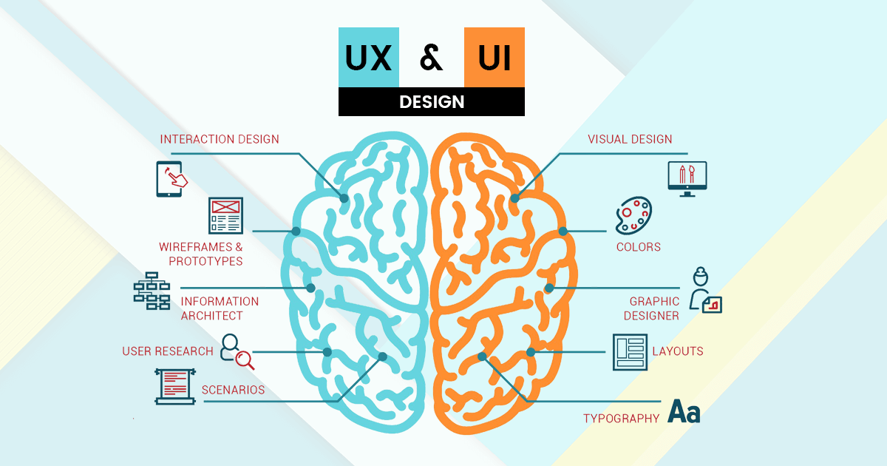
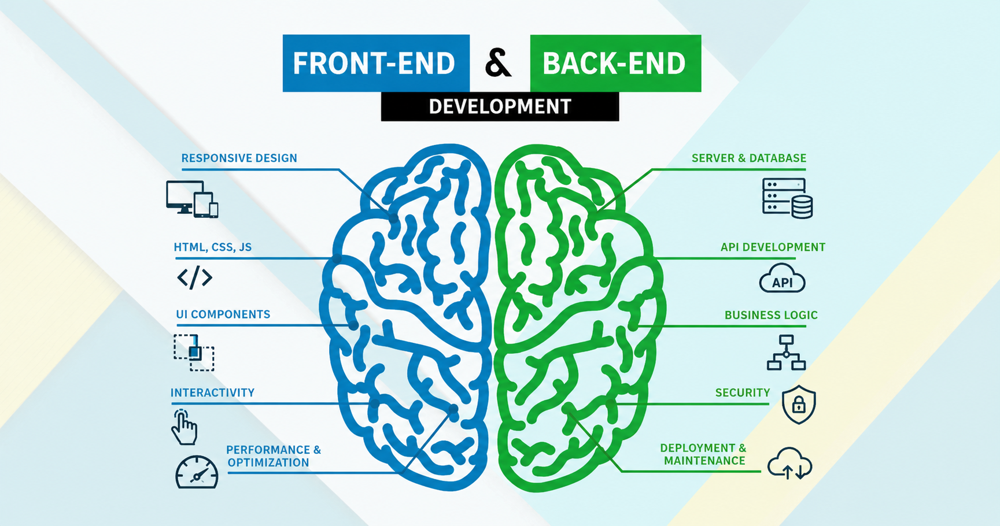
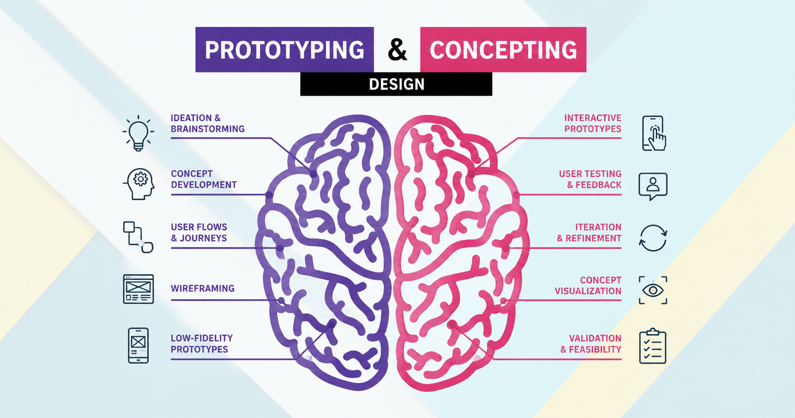
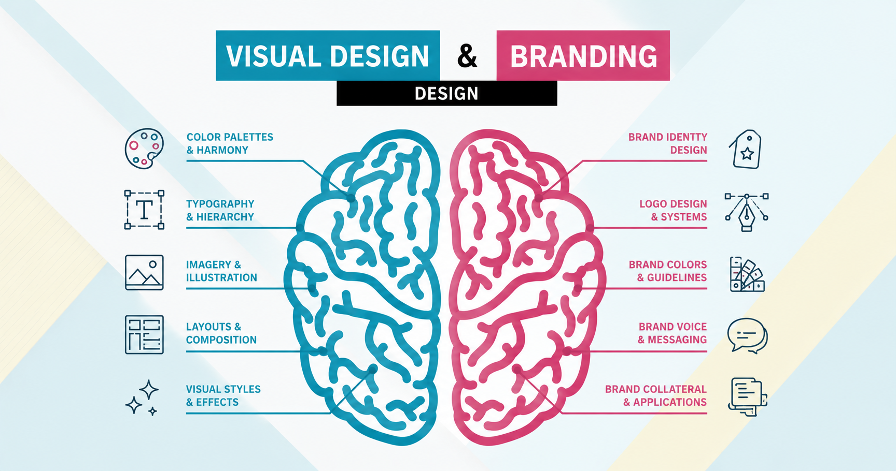

Ruben Verhoeven
Digital Designer
& Creative Developer
I'm a CMD student based in Amsterdam, with a focus on interaction design and front- and back-end development.

SERVICES




SKILLS & EXPERTISE
My work is at the intersection of design and development.
From user research to interactive interfaces I combine creativity with technical execution.
I design digital experiences that feel logical, accessible and intuitive.
I translate designs into fast, responsive websites with attention to detail and performance.
Conceptual thinking and storytelling help me turn ideas into strong visual experiences.
MY DESIGN PROCESS
How I approach design projects to create effective and engaging digital experiences.
Understand & Explore
I start every project by understanding the problem before moving into solutions. Through research, analysis and exploration I identify user needs, project goals and technical possibilities.
By comparing different approaches and perspectives, I define a clear design direction that balances feasibility, usability and meaningful user experiences.
Concept & Design
Based on research insights, I develop concepts that balance user needs, business objectives and usability principles. I explore multiple directions, gather feedback and iterate on ideas to refine interaction and visual clarity.
Each design decision is made consciously to create intuitive experiences that communicate purpose and support user goals effectively.
Prototype & Build
I translate concepts into interactive prototypes and functional interfaces using tools such as Figma and modern front-end technologies.
During development I experiment, test behaviour and refine details to improve usability and performance. By combining design thinking with technical execution, I ensure ideas evolve into realistic and usable digital products.
Test & Improve
Evaluation and iteration are essential parts of my workflow. I validate designs through usability testing, feedback sessions and critical reflection on interaction outcomes.
Analysing successes and limitations helps me improve solutions continuously while learning how small adjustments can significantly enhance usability, accessibility and overall user experience.
Collaborate
Design is a collaborative process where communication and shared thinking lead to stronger outcomes. I enjoy presenting ideas, discussing feedback and working together with different perspectives to refine concepts.
Through teamwork and open dialogue, I contribute actively while learning from others to create more thoughtful and effective design solutions.
Organise & Deliver
I approach projects with structured planning, clear milestones and transparent communication. Documenting design decisions and tracking progress helps maintain focus and ensures deadlines are met responsibly.
Staying organised allows me to collaborate efficiently, manage complexity and deliver consistent results while maintaining quality throughout the entire design process.
Craft & Quality
I aim to maintain professional standards in both design and development by focusing on detail, consistency and accessibility. Clean interface design, readable code and thoughtful interaction patterns contribute to sustainable digital products.
Continuous experimentation and refinement help me strengthen craftsmanship while developing reliable and scalable design solutions.
Personal & Responsible Design
I believe design has impact beyond aesthetics. I reflect on how digital products influence users and society, staying curious about new developments in technology, interaction and digital culture.
I approach projects critically, making informed design decisions and continuously reflecting on my own growth as a designer.
Let's build something together!
I'm currently open to internships, freelance projects and collaborations.
Let's get in touch!